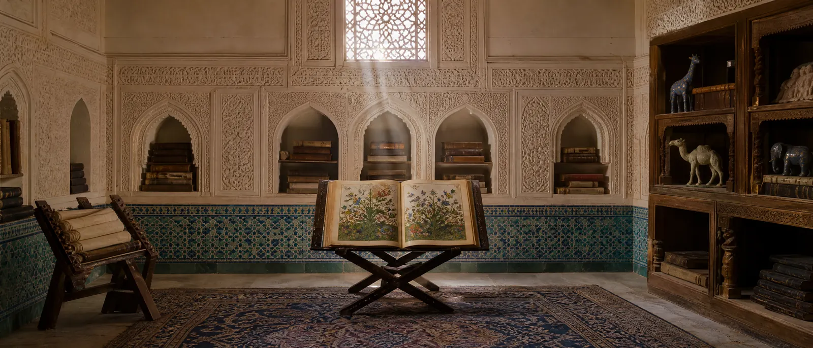

यूरोप ने महान शतरंज के बारे में कैसे जाना
हाइड, ब्लैंड, फ़ोर्ब्स, मरे: चार विद्वान जिन्होंने दो सौ साल में खेल को पांडुलिपियों से निकाला।

ऑक्सफ़ोर्ड के प्राच्यविद थॉमस हाइड ने 1694 में “पूर्वी खेलों पर” प्रकाशित की — शतरंज का पहला वैज्ञानिक इतिहास। उसमें जिराफ़ वाली बड़ी बिसात भी है। आज हाइड को शतरंज के वैज्ञानिक इतिहास का संस्थापक माना जाता है।
नैथेनियल ब्लैंड ने 1847 में रॉयल एशियाटिक सोसाइटी में “फ़ारसी शतरंज के खेल पर” व्याख्यान पढ़ा और लंदन की पांडुलिपि का विस्तृत विश्लेषण किया। उसकी दशा का कड़वा वर्णन भी उन्होंने छोड़ा: पन्ने उलझे हुए, कुछ खोए हुए।
डंकन फ़ोर्ब्स ने “शतरंज का इतिहास” (1860) में रहस्यमय मोहरों के लिए चालें प्रस्तावित कीं और पांडुलिपि का लेखक अली अश-शतरंजी को बताया। बाद में पता चला कि फ़ोर्ब्स स्रोतों पर वह थोपते थे जो उनमें नहीं है, इसलिए उनके निष्कर्षों की फिर से जाँच हो रही है।
हैरॉल्ड मरे ने विशाल “शतरंज का इतिहास” (1913) में बड़े रूपों के बारे में ज्ञात सब कुछ संकलित किया। उनके आरेखों के पाठ पर भी कहीं-कहीं मूल पांडुलिपियाँ पढ़ने वाले आधुनिक शोधकर्ता प्रश्न उठाते हैं।